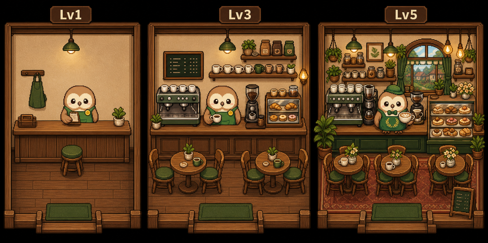

Concepts
カフェ内装の方向性と重なり確認ページ
Lv1 重なり検証
背景レイヤー、豆福、前面カウンターの順に重ねた検証画像です。

豆福がカウンターテーブルの後ろに立っているように見えるかを確認します。OKなら、このレイヤー構造をアプリ本体のLv1表示へ反映します。
内装方向性
Lv1からLv5までの街カフェ風イメージです。

実装素材では文字なし、説明ラベルなし、背景・豆福・前面カウンターを別画像として作ります。
カフェ内装の方向性と重なり確認ページ
背景レイヤー、豆福、前面カウンターの順に重ねた検証画像です。
豆福がカウンターテーブルの後ろに立っているように見えるかを確認します。OKなら、このレイヤー構造をアプリ本体のLv1表示へ反映します。
Lv1からLv5までの街カフェ風イメージです。

実装素材では文字なし、説明ラベルなし、背景・豆福・前面カウンターを別画像として作ります。